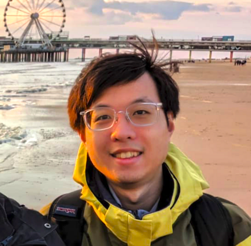

Chung-Hsuan Tung
PhD Candidate · Dept. Electrical and Computer Engineering · Duke University
About
I am a fifth-year Ph.D. student in Electrical and Computer Engineering at Duke University, advised by Prof. Tingjun Chen. My research focuses on accelerating wireless signal processing, including 5G FR2 MIMO, spectrum sensing, and new waveform receiver design. Before joining in Functions Lab, I worked with Prof. Krishnendu Chakrabarty at Duke on hardware reliability. Before Duke, I received my B.S. in Electrical Engineering from National Cheng Kung University (NCKU) in Taiwan with a focus on VLSI design and ML hardware advised by Prof. Chung-Ho Chen. I am broadly interested in computer architecture and systems.